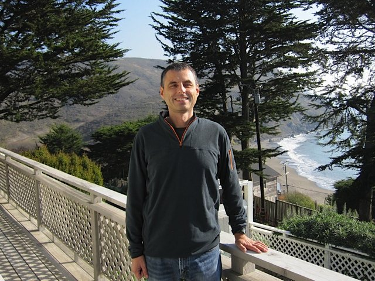
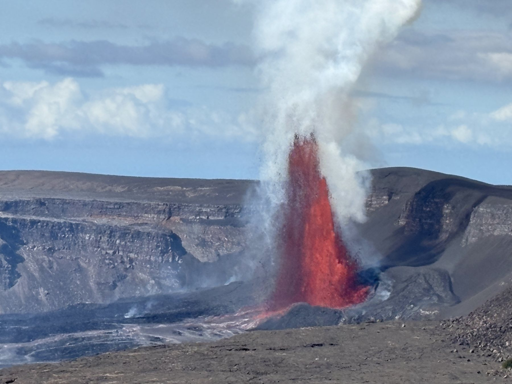
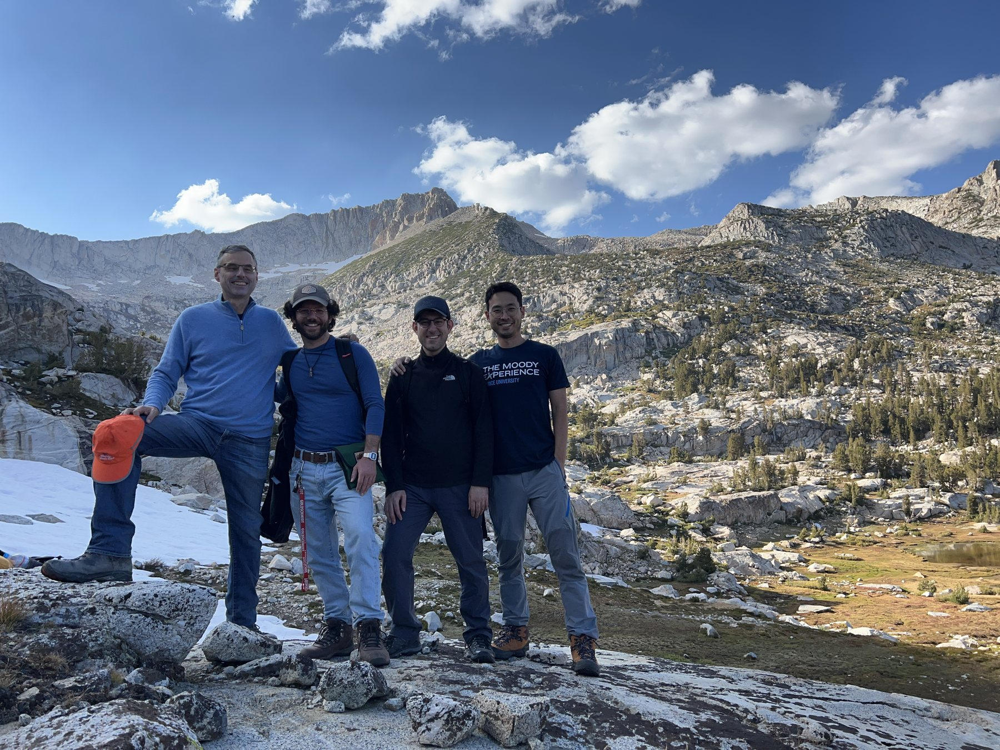

Helge Gonnermann
Professor, Department of Earth, Environmental and Planetary Sciences, Rice University
My group studies how magma moves and erupts. We want to understand why some eruptions are explosive and others effusive, and how the gas bubbles that form as magma rises control the outcome.
We combine laboratory experiments, measurements on erupted rocks and numerical models, working from the scale of a single bubble to that of a whole volcano.

Research themes
- Recent eruptions at Kīlauea: magma supply, ascent and degassing
- The 2011–12 eruption of Cordón Caulle: silicic magma storage, eruption and aftermath
- Bubbles in magma: nucleation, growth and coalescence
- Fragmentation and eruption style: what makes an eruption explosive
- Magma properties: rheology, permeability and outgassing
- Magma storage and transport: from supply at depth to the surface
- Hydrothermal systems: how shallow, magma-heated aquifers respond to rain and snowmelt

Recent work
Research group



Join the group
We are always looking for motivated and talented students and postdocs. If our work interests you, see Opportunities or get in touch.